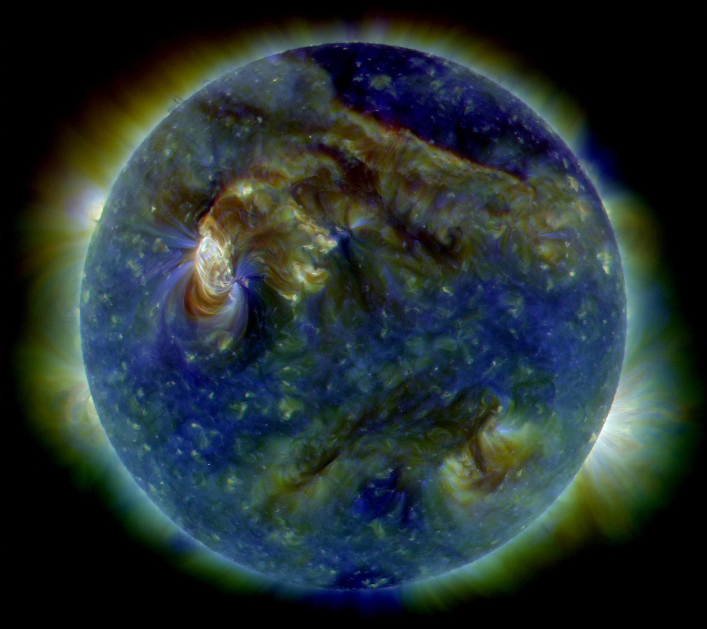

La Astronomia de radio o Radioastronomía es una disciplina científica que se ocupa del estudio de los objetos astronómicos por medio de la detección de las ondas de radio provenientes del universo. Las ondas de radio son un tipo de radiación electromagnética con longitudes de onda en el espectro electromagnético mayores a la luz infrarroja. La longitud de las ondas de radio varía desde 1 mm hasta 10000 km, esto es, pueden ser tan pequeñas como un grano de arroz o alcanzar tamaños mayores al radio de la Tierra. Aunque invisibles para el ojo humano (el ojo humano percibe longitudes de onda entre 380 nm a 750 nm), vivimos inmersos en un mundo de ondas de radio; los sistemas de comunicación modernos tales como la comunicación fija y móvil (celulares), radiodifusión, radar y otros sistemas de navegación, satélites de telecomunicaciones, entre otras, utilizan ondas de radio.
La radioastronomía, pues, ha contribuido fuertemente al conocimiento actual que se tiene del universo; en el futuro cercano, mediante el desarrollo de nuevas tecnologías y técnicas de observación, se espera revele aspectos relacionados con la formación del universo y ponga a prueba teorías fundamentales de la física, tales como la Relatividad General.
Otra notable contribución de la radiastronomía ha sido la posibilidad de determinar la estructura espiral de la Vía Láctea mediante mapeos de la distribución de hidrógeno neutro.
5.2. Astronomia infrarroja
Es el estudio de los objetos astronómicos mediante observaciones de la radiación infrarroja que emiten. Varios tipos de objetos celestes, incluidos los planetas del sistema solar , estrellas , nebulosas y galaxias, emiten energía en longitudes de onda en la región infrarroja del espectro electromagnético (es decir, desde aproximadamente un micrómetro a un milímetro). Las técnicas de la astronomía infrarroja permiten a los investigadores examinar muchos de esos objetos que de otro modo no se pueden ver desde la Tierra porque la luz de longitudes de onda ópticas que emiten está bloqueada por partículas de polvo que intervienen.
Se originó a principios del siglo XIX con el trabajo del astrónomo británico Sir William Herschel , quien descubrió la existencia de radiación infrarroja mientras estudiaba la luz solar. Las primeras observaciones infrarrojas sistemáticas de objetos estelares fueron realizadas por los astrónomos estadounidenses.WW Coblentz ,Edison Pettit y Seth B. Nicholson en la década de 1920. Técnicas modernas de infrarrojos, como el uso deLos sistemas detectores criogénicos (para eliminar la obstrucción por la radiación infrarroja liberada por el propio equipo de detección) y filtros de interferencia especiales para telescopios terrestres se introdujeron a principios de la década de 1960.
5.3. Astronomia ultravioleta
Es la observación de radiación electromagnética en longitudes de onda ultravioleta entre aproximadamente 10 y 320 nanómetros, las longitudes de onda más cortas (fotones de mayor energía) son estudiadas por la astronomía de rayos X y la astronomía de rayos gamma. La luz ultravioleta no es visible para el ojo humano. La mayor parte de la luz en estas longitudes de onda es absorbida por la atmósfera de la Tierra, por lo que las observaciones en estas longitudes de onda deben realizarse desde la atmósfera superior o desde el espacio.

Un telescopio enviado a una altitud de 40 km, es decir, casi por encima de la capa de ozono de la atmósfera, puede observar la luz ultravioleta de hasta unos 200 nm. Para observar longitudes de onda menores de 200 nm, el dispositivo de observación tiene que estar colocado por encima de la atmósfera terrestre. Los telescopios situados en globos o pequeños cohetes son de gran utilidad, pero su tiempo de observación se ve limitado a unos cuantos minutos en el caso de un cohete y a algunas horas cuando se trata de un globo. Desde 1968 la mayor parte de las observaciones del ultravioleta medio y lejano se han efectuado desde telescopios situados en la órbita de la Tierra.
5.4. Astronomia de rayos x
La astronomía de rayos X es un campo de la astronomía que se centra en la detección y evaluación de fuentes de rayos X en el universo. Los agujeros negros, las estrellas de neutrones y una variedad de otros fenómenos emiten radiación electromagnética, incluidos rayos X, y el estudio de esta radiación puede proporcionar información importante sobre el universo. Los astrónomos de rayos X trabajan con satélites, cohetes y globos para realizar observaciones. Pueden trabajar para organizaciones privadas, agencias gubernamentales o instituciones educativas.
Los rayos X están entre 0.01 a 10 nanómetros, 1 nanómetro equivale a 0.000000001m. Son ondas chiquitas, más chiquitas que el visible (la luz que vemos), y con más frecuencia. Eso las hace de más energía y más peligrosas. Se les divide en duros y suaves, los duros están entre 0.01 a 0.1 nm, y los suaves entre 0.1 y 10nm. Pueden ver objetos muy calientes, de millones de grados Kelvin (entre 1 y 100 millones).
Algunos investigadores se centran en escanear el cielo en busca de nuevas detecciones. Utilizan equipos de alta sensibilidad para localizar nuevos sitios de interés mediante la búsqueda de radiación que otros investigadores no han podido encontrar. El universo es extremadamente grande y es muy fácil pasar por alto las fuentes de radiación, que a veces incluyen las más importantes. Los investigadores pueden utilizar herramientas como rutinas de programación para examinar sus datos e identificar objetivos de interés.
5.5. Astronomia de rayos gamma
Los rayos gamma son una forma de radiación electromagnética que se encuentra en el extremo más elevado de energía de lo que llamamos espectro electromagnético. Los rayos gamma de altas energías son producidos en fenómenos extremadamente violentos del Universo, en los que se pone en juego una cantidad de energía lo suficientemente grande como para acelerar partículas cargadas que emitirán esta radiación al
interactuar con la materia o los campos electromagnéticos que las rodeen. Entre estos fenómenos podemos contar con explosiones de supernova, formación de estrellas, acreción de material por objetos compactos, etc.
Estos rayos gamma viajan por el espacio de altas energías sin ser desviados por los campos magnéticos y, si no fueron absorbidos por los campos de radiación que llenan el Universo, pueden llegar a nosotros trayendo con ellos valiosa información sobre las fuentes que los produjeron.
A finales de los 60 y principios de los 70, una serie de satélites militares que portaban a bordo detectores de rayos gamma provenientes de los estallidos de bombas nucleares, descubrieron ráfagas de rayos gamma procedentes del espacio exterior. Estas ráfagas tenían una muy breve duración, apareciendo súbitamente desde todas las direcciones para luego desvanecerse. Los estudios realizados a partir de los años 80 a través de varios satélites entre los que se incluyen la soviética Venera y la Pioneer, entre otros, no arrojaron nueva luz sobre el misterio de los rayos gamma. Actualmente la teoría más aceptada es que la mayoría de estas ráfagas proceden de estrellas tremendamente masivas que colapsan en potentes explosiones de supernova llamadas hipernovas, y que generan agujeros negros en vez de estrellas de neutrones, otras podrían ser emisiones originadas por la fusión entre dos estrellas de neutrones o una estrella de neutrones con un agujero negro.